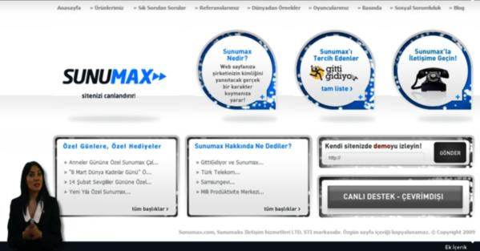

Sunumax'a olan ilginiz için teşekkür ederiz.
1986 doğumlu Sadık Kocabaşa ve 1990 doğumlu Cem Kocabaşa kardeşler tarafından kurulan ‘sunumax.com’, televizyon sunucusu gibi bir karakterin, sitelerde ziyaretçileri karşılayıp ürün veya hizmetleri anlatmasını sağlayan bir ürün ve prodüksiyon sunuyordu.
Geliştirdikleri bu teknolojiyle kısa sürede birçok kurumsal firmaya hizmet veren Kocabaşa kardeşler, yarı yapay zekayla online karakterlerin konuşması veya sitelerin içinde belli komutlara göre iletişime geçmesi için çalışmalarını sürdürdü. Hızla gelişen teknolojiler ve web trendlerinin değişmesinden sonra ürün popülerliğini yitirdi ve pazarın daha alt segmentlerinin ilgisini çekmeye başladı.
Ürünleri artık kârlı olmayan Sunumax, zaman içinde kurucularının ilgisini kaybetti.
Şu anda Cem ve Sadık, Kamara'yı kurarak müşterilerine sanal ofis ve hazır ofis hizmetleri vermeye devam ediyorlar.